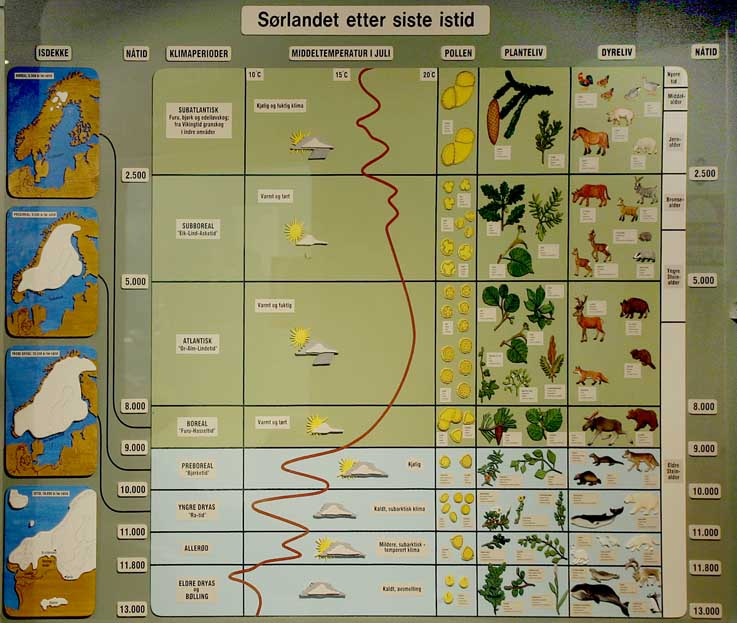
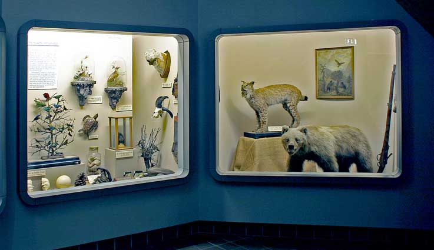
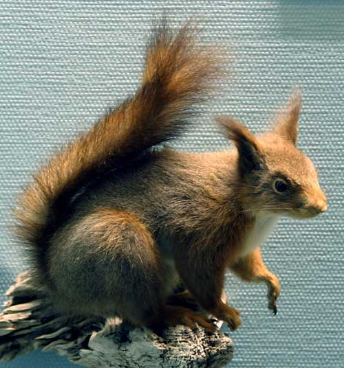
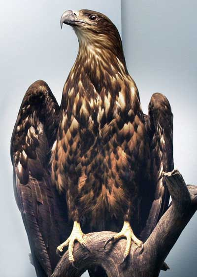

Dyr og fugler i Agder naturmuseum
- En omvisning sommeren 2003
Tekst: Ovin Udø
Foto: Torvald Slettebø, Universitetet i Agder, Seniorsenteret
Agder naturmuseum (tidligere Kristiansand Museum) ble grunnlagt i 1828 og er blant Norges eldste museale institusjoner. Museet åpnet nye utstillinger sommeren 1990.

Gjennom moderne utstillingsteknikk blir utviklingen av Sørlandsnaturen framstilt fra istid til nåtid og fra hav til høyfjell. En spesialustilling av fargerike mineraler setter også preg på utstillingen, og her finnes landsdelens eneste botaniske hage.
Uthusbygningene på Gimle Gård. Låven til venstre huser blant annet Agder naturmuseums faste utstillinger. I bygningen i midten finnes zoologisk preparantverksted. Det karakteristiske Ridehuset er bygningen til høyre i bildet.

Fra tunet utenfor hovedinngangen til Agder naturmuseum. Museet har egen kafe som er åpen hele året. Om sommeren danner tønneplantene fra Botanisk hage en eksotisk ramme om kafebordene, og folk koser seg i sola.
Fra museets vestibyleområde.
Fra museets vestibyleområde, med bl.a. preparat av stor månefisk.
Karakteristiske landskapstyper fra Agder.
Ulven forekommer igjen på Agder som streifdyr, etter et fravær på nesten hundre år.
Elg i typisk landskap fra indre Agder.

Portrett av gammel elgku.
Portrett av elgokse.
Reinsdyr. Agderfylkene har Europas sydligste reinsdyrstamme.
Moskusdyr, døde ut i Europa under siste istid, gjeninnført til Dovrefjell i 1947.
Moskus med kalv
Brunbjørnen ble borte fra vår landsdel på slutten av 1800-tallet. Den er nå tilbake på Agder med enkelte streifddyr.
Beveren bygger demninger og lager våtmarker.
Portrett av to beverunger.
Beverunge på ”spiseplass”.
Lemen er valgt til Norges nasjonaldyr
Steinkobber i skjærgården.
Steinkobbe med unge
Isbjørnen er et av de første dyrene som vandret inn etter siste istid for ca 11 000 år siden.

Modell som viser hvordan isen har forandret landskapet.
Skjematisk oversikt over livets utvikling på jorden.
Skjematisk oversikt over utvikling av klima fra isen trakk seg tilbake og frem til i dag.

Illustrasjon av torvmyras betydning for å kunne tyde klimautviklingen tilbake til istiden.
Oversiktsbilde fra utstillingen ”fra Istid til Nåtid”.
Utstilling fra museets første samlinger.
Utstilling fra museets første samlinger.
Fra museets første samlinger.
Oversiktsbilde fra utstillingen ”fra Istid til Nåtid”.
Rådyr er knyttet til kulturlandskapet.
Portrett av hjortekalv.
Hjortekalv og elgkalv.
Villsvin med unger.
Villsvinunger leter etter mat.
Piggsvin på jakt etter insekter.
Måren synes egg er fortreffelig mat.
Rødrev
Ekorn
Røyskatt i vinterpels.
Røyskatt med død fjellrype.
Havørn er vår største rovfugl.
Sneugle er en av våre største uglearter.

Portrett av sneugle.
Perleugle.
Haukugle med bytte.
Vandrefalk, verdens raskeste flyger.
Tiur i spill.
Tiur.
Knoppsvane, en art i fremgang.
Lundefugl.
Lundefuglen er karakteristisk med sitt kraftige og fargeglade nebb.
Rekonstruksjon av geirfugl, vår største alkefugl, som døde ut på 1800-tallet.
Storskarv.
Gravand, en karakterfugl fra strendene på Lista.
Dverggåsen er svært fåtallig i Norge, og sårbar i forhold til utryddelse.
Teist med ungfugl.
Praktærfugl.

Storjo.
Hvitkinngåsa besøkte landsdelen på trekk mot Svalbard.

Alkekonge, vår minste alkefugl, er vintergjest i Skagerakk.
Fasanpar.
Lavskrike.
Dompapp.
Blåstrupe, en karakterfugl i bjørkebelte på fjellet.
Heilo med kylling
Kjøttmeis.
Gråtrost kommer med mat til ungene.